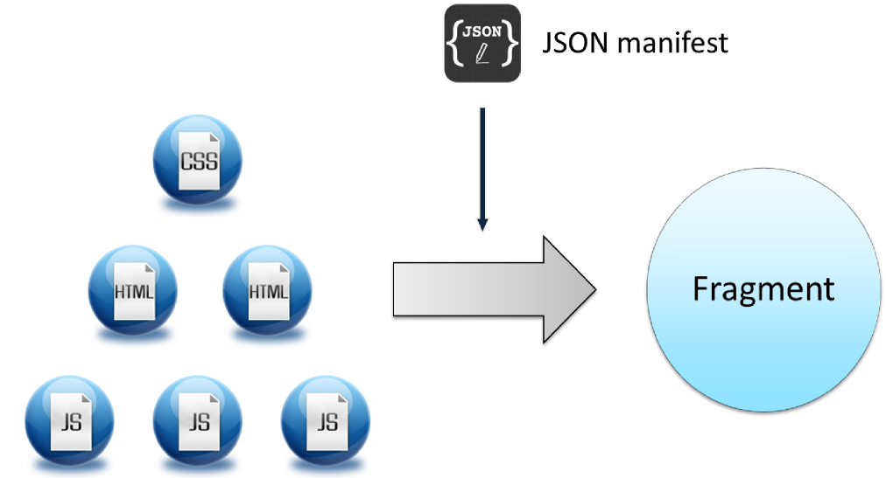
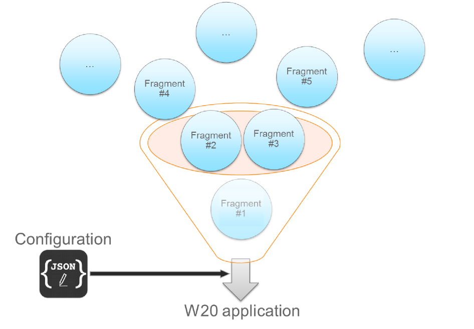

W20
Enterprise-class Web stack
adrien.lauer@mpsa.com / PSA Peugeot Citroën
Adrien LAUER
Software engineer at PSA Peugeot Citroën
9 years of experience
Designed and developed W20 during the last 2 years
Currently working server-side (again!) on the PSA Java stack
PSA Peugeot Citroën
Well known car manufacturer
A lot of Web applications
Various server technologies: Java, PHP, .NET, Perl, ...
Agenda
concepts
contents
demo
What we had ?
An existing framework made in 2005 to address industrial applications UI needs.
It was very useful during 7 years but today it's...
- ...too functionally limited,
- ...costly to maintain,
- ...too specific (so very little used outside industrial context)
What we needed ?
Still an UI framework but a better one !
- ...which could address any HTTP capable server application,
- ...which could leverage the latest Web technologies,
- ...which should be simple to use yet powerful
And what we've done
W20 is a modular software stack which provides:
- ...resource loading and dependency management
- ...full featured application engine
- ...various ready-to-use features (i18n, UI components, authentication, ...)
Agenda
overview
contents
demo
Fragment
{
"id": "w20-core",
"name": "W20 core",
"build": "{w20-core}/w20-core.min",
"modules": {
"application": {
"path": "{w20-core}/modules/application",
"configSchema": { ... }
},
...
},
"i18n": {
"en": [ "{w20-core}/i18n/messages-en.json" ],
"fr": [ "{w20-core}/i18n/messages-fr.json" ]
},
"requireConfig": {
"shim": {
"{w20-core}/libext/angular/angular": {
"deps": [ "jquery" ],
"exports": "angular"
},
...
}
}
}Application
{
"../../../w20/w20-core/w20-core.w20.json" : {
"modules" : {
"application":{
"id":"w20-basic-sample",
"home": "/basic/content"
},
"culture":{
"available":["en-US", "fr-FR"],
"default":"en-US"
}
}
},
"../../../w20/w20-ui/w20-ui.w20.json" : {
"modules" : {
"grid":{},
"datetime":{}
}
},
"../../../w20/w20-simple-theme/w20-simple-theme.w20.json" : {},
...
}
<!doctype html>
<html data-w20-app>
<head>
<script
type="text/javascript"
data-main="../../../w20/w20-core/w20"
src="../../../w20/w20-core/libext/requirejs/require.js">
</script>
</head>
<body>
...
</body>
</html>
Agenda
overview
concepts
demo
Core
- Loads and initialize the application
- Provides the application engine
- Adds i18n, security, storage, events, preferences, connectivity


UI
- Provides UI framework
- Adds menus, notifications, date/time pickers, combo box, data grid, tree view
Testing
- Provides an in-browser runner
- Will soon provide a runner for continuous integration

Multiple themes
- Every stylesheet and template is externalized into a theme
- A simple theme is provided
- Various PSA specific themes are also actively developed
Agenda
overview
concepts
contents
Thanks !
adrien.lauer@mpsa.com / PSA Peugeot Citroën